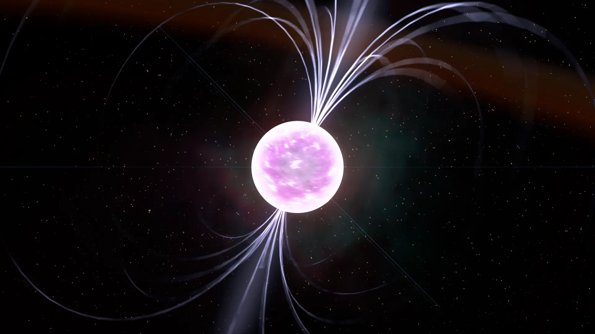
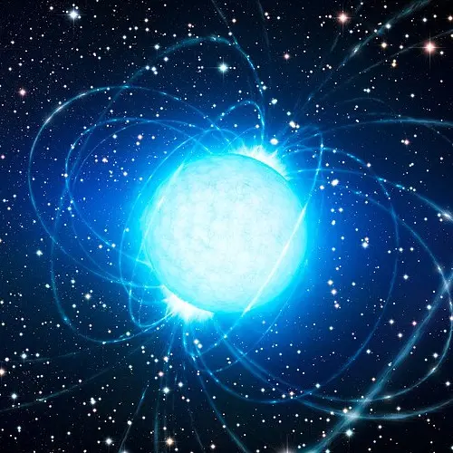
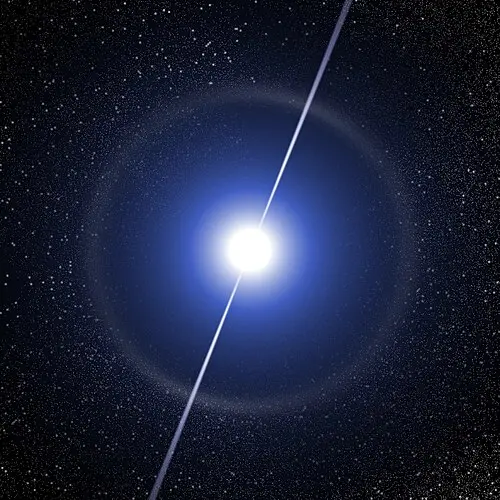
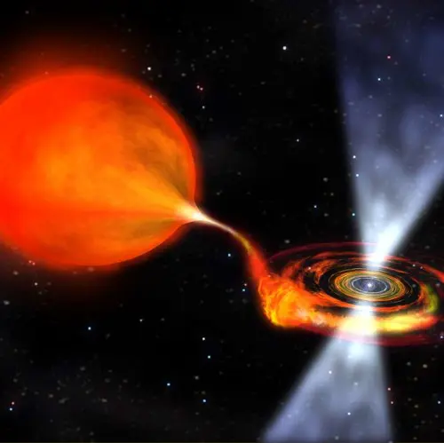
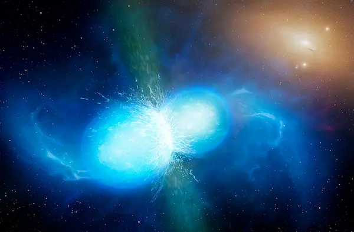
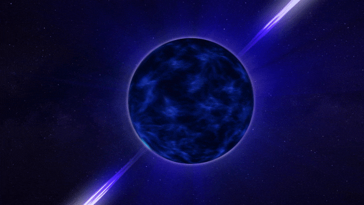

Neutron Star

Magnetar

Pulsar

Millisecond Pulsar

Types of Neutron Stars:
Pulsars:
A pulsar is a rotating neutron star that is highly magnetized. It emits beams of electromagnetic radiation out of its magnetic poles. These beams of radiation can be seen when pointed towards Earth, like a lighthouse when its light pointed towards us. Pulsars rotate extremely rapidly due to the conservation of angular momentum.
Magnetars:
A magnetar is a neutron star with an extremely powerful magnetic field. Because their magnetic fields are much stronger than other neutron stars they rotate more slowly. The magnetic field of a magnetar is so intense, if you put one halfway between the Earth and the Moon it would wipe all the credit cards on earth rendering them useless.
Millisecond Pulsars:
When a neutron star is near another star it can start to pull matter from it, forming an accretion disk. As the matter is consumed by the neutron star it begins to speed up and become what's known as a millisecond pulsar. A millisecond pulsar has a rotational period of less than 10 milliseconds.
Neutron Stars Merging

Neutron Star Mergers:
When two neutron stars are close enough to each other, they can begin to spiral in toward one another. When they collide, they heat up to unbelievable temperatures and form a more massive neutron or, if they are massive enough, they collapse into a black hole.
When this happens, they create an immensely strong magnetic field, trillions of times stronger than Earths. The result is the emission of something called a short gamma ray burst. This tremendous release of energy can be seen from hundreds of millions or even billions of light years away.
The merging of two neutron stars creates an environment so intense that elements heavier than iron can be created. It also releases a gravitational wave that radiates outward at the speed of light. In 2017, scientists observed one of these gravitational waves from the merging of two neutron stars about 140 million light years away.
Spinning Pulsar
